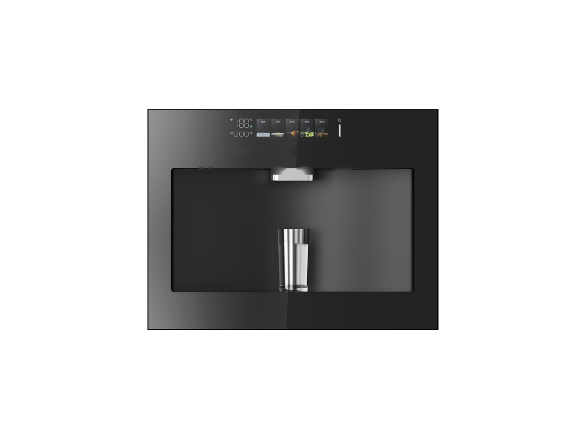
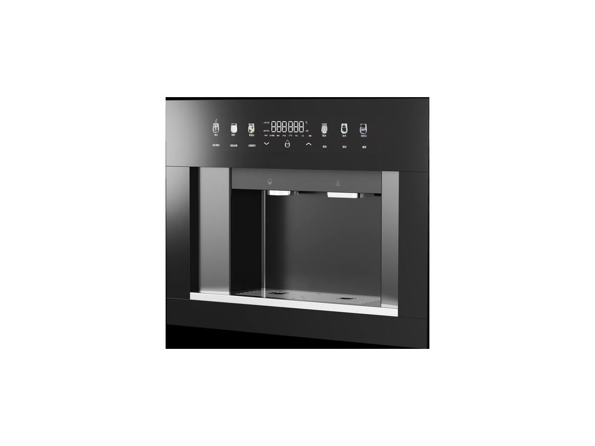

台式净水器
台式净水器RP-C08
一体式滤芯台式净水器
SKU: RP-C08
起订量：询价时确认

台式净水系统
嵌入式冷热净水器 (AM2564-H) — 三个选择，主推款为冷热饮水机。
RP-C24 是嵌入式冷热净饮机系列：深度仅 280–325 mm，可嵌入厨房柜体，与橱柜齐平安装；压缩机制冷、3300W 厚膜即热、过流式 UV 杀菌。三款共用同一平台，区别在显示屏、过滤与制冰——冷热饮水机款（超大触控彩屏，6 档专温 + 1 档自定义，595 × 280 × 450 mm）；TFT 彩屏净饮机款（雷达感应靠近自动唤醒，1000G，额定净水量 5000 L，595 × 325 × 455 mm）；子弹冰净饮机款（制冰 5 kg/24h，1000G，额定净水量 4000 L，595 × 300 × 450 mm）。规格按型号及订单确认。
电压／频率可按目标国家配置，其他配置按订单确认。
三个嵌入式选择——报价统一按 RP-C24，询价时请注明款式（冷热饮水机、TFT 彩屏净饮机或子弹冰净饮机）。
将鼠标悬停在款式图片上查看对应参数。触屏设备请点按图片。


各变体的完整参数并排对比。下方的规格表为 RP-C24 的参数。
| 规格 | RP-C24-1 — 冷热饮水机款 (AM2564-H) | RP-C24-2 — TFT 彩屏净饮机款 (AM2564-HD) | RP-C24-3 — 子弹冰净饮机款 (AM2564-HDI) |
|---|---|---|---|
| 类型 | 嵌入式冷热饮水机 | 嵌入式冷热净饮机 | 嵌入式子弹冰冷热净饮机 |
| 制冰 | 按订单确认 | 按订单确认 | 5 kg/24h（8 mm 子弹冰，8 分钟一轮） |
| RO 产水量 | 按订单确认 | 1000G | 1000G |
| 产水流量 | 按订单确认 | ≥2.6 L/min | ≥2.6 L/min |
| 额定净水量 | 按订单确认 | 5000 L | 4000 L |
| 过滤方式 | 按订单确认 | 五合一（PP棉 + 活性炭 + RO膜 + 后置碳） | 按订单确认 |
| 加热 | 3300W 厚膜加热，30 L/h（≥90°C） | 3300W 厚膜加热，30 L/h（≥90°C） | 3300W 厚膜加热，30 L/h（≥90°C） |
| 制冷 | 压缩机制冷，2 L/h（≤10°C） | 压缩机制冷，2 L/h（≤10°C） | 压缩机制冷，2 L/h（≤10°C） |
| 显示屏 | 超大触控彩屏 | TFT 触控彩屏，雷达感应自动唤醒 | 18 英寸彩屏 |
| 尺寸 (L×W×H) | 595 × 280 × 450 mm | 595 × 325 × 455 mm | 595 × 300 × 450 mm |
| UV 杀菌 | 99.99%（过流式） | 99.99%（过流式） | 99.99%（过流式） |
| 电压／频率 | 按目标国家配置 | 按目标国家配置 | 按目标国家配置 |
ROPureOEM 目录中的 11 行规格。
| 类型 | 嵌入式冷热饮水机 |
|---|---|
| 加热功率 | 3300W（厚膜加热） |
| 制冷能力 | 2 L/h（≤10°C，压缩机制冷） |
| 制热水能力 | 30 L/h（≥90°C） |
| 制冰 | 按订单确认 |
| 额定净水量 | 按订单确认 |
| 尺寸 (L×W×H) | 595 × 280 × 450 mm |
| 水温档位 | 6档专温 + 1档自定义 + 制冰 + 冰水 |
| 水量档位 | 150 / 200 / 300 / 500 mL / 不限量 |
| UV 杀菌 | 99.99%（过流式） |
| 电压／频率 | 按目标国家配置 |
规格来源于 ROPureOEM 目录。尚未确认的数值标注为“按订单确认”，不发布未经确认的参数。